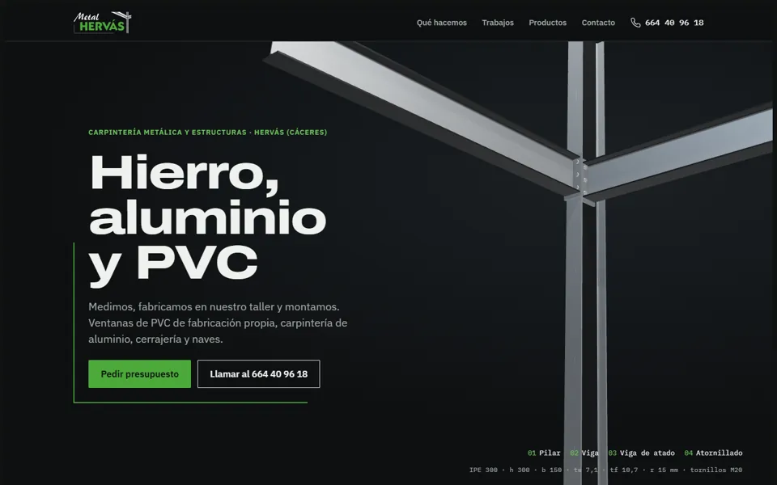
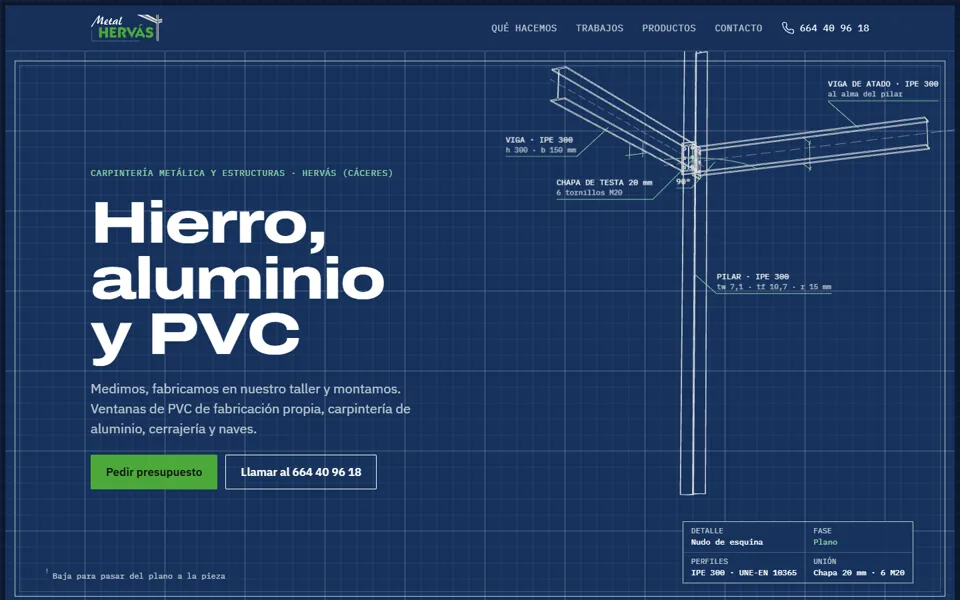
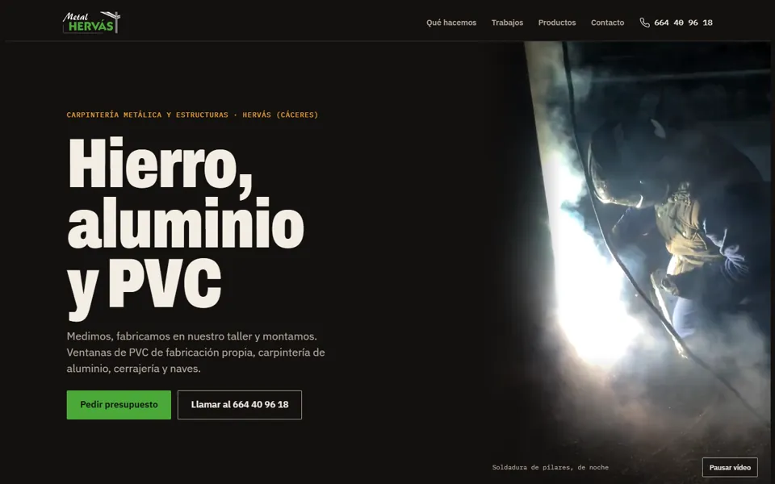
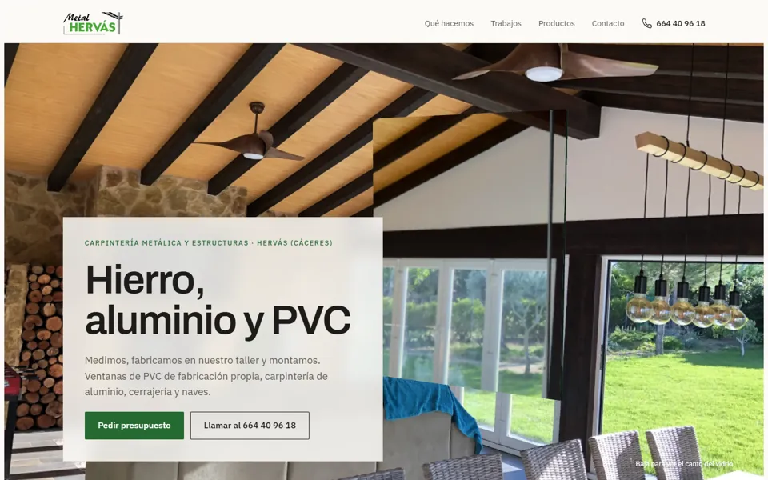
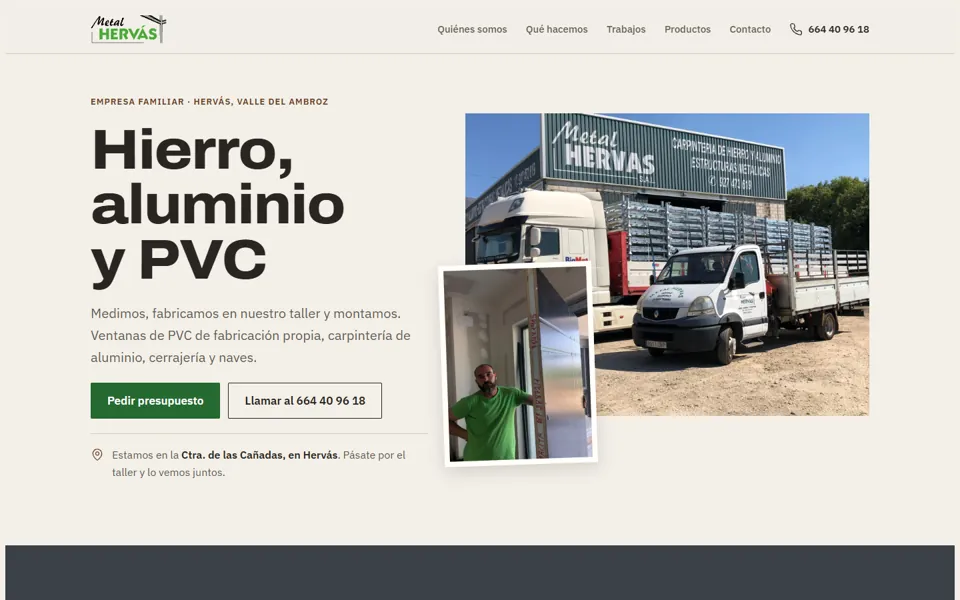

<meta charset="utf-8">
<meta name="viewport" content="width=device-width, initial-scale=1, viewport-fit=cover">
<title>Cinco estilos Metal Hervás</title>
<link rel="preconnect" href="https://fonts.googleapis.com">
<link rel="preconnect" href="https://fonts.gstatic.com" crossorigin>
<link rel="stylesheet" href="https://fonts.googleapis.com/css2?family=Archivo:wdth,wght@62..125,600..800&family=IBM+Plex+Sans:wght@400;500;600&display=swap">
<style>
/* Comparador: las cinco direcciones de la página inicial, lado a lado, para elegir. Página sencilla con los
   tokens del Design System; el protagonismo es de las capturas. */
:root {
  --fondo: #f5f6f4; --tarjeta: #ffffff; --linea: #d6dbd7; --tinta: #141815; --tinta-suave: #545e58;
  --verde-texto: #256a31; --verde-tinte: #e3f3e6; --accion: #256a31; --on-accion: #ffffff; --focus: #256a31;
  --display: "Archivo", "Arial Black", system-ui, sans-serif; --sans: "IBM Plex Sans", "Segoe UI", system-ui, sans-serif;
}
@media (prefers-color-scheme: dark) {
  :root:not([data-theme="light"]) { --fondo: #0f1211; --tarjeta: #181c1a; --linea: #2c3330; --tinta: #eef1ee; --tinta-suave: #a3ada7; --verde-texto: #6cc85a; --verde-tinte: #14261a; --accion: #4ba939; --on-accion: #0b140c; --focus: #87d2a9; color-scheme: dark; }
}
:root[data-theme="dark"] { --fondo: #0f1211; --tarjeta: #181c1a; --linea: #2c3330; --tinta: #eef1ee; --tinta-suave: #a3ada7; --verde-texto: #6cc85a; --verde-tinte: #14261a; --accion: #4ba939; --on-accion: #0b140c; --focus: #87d2a9; color-scheme: dark; }
* { box-sizing: border-box; }
body { background: var(--fondo); color: var(--tinta); font-family: var(--sans); font-size: 17px; line-height: 1.6; margin: 0; }
.pagina { max-width: 1200px; margin: 0 auto; padding-inline: clamp(16px, 4vw, 48px); padding-block: clamp(32px, 6vw, 72px); display: flex; flex-direction: column; gap: 40px; }
:focus-visible { outline: 2px solid var(--focus); outline-offset: 2px; }
.cabeza { display: flex; flex-direction: column; gap: 14px; max-width: 760px; }
.cabeza .label { font-size: 13px; font-weight: 600; letter-spacing: 0.08em; text-transform: uppercase; color: var(--verde-texto); margin: 0; }
h1 { font-family: var(--display); font-weight: 800; font-stretch: 115%; font-size: clamp(36px, 5vw, 60px); line-height: 1; letter-spacing: -0.02em; margin: 0; text-wrap: balance; }
.cabeza p { margin: 0; color: var(--tinta-suave); font-size: 18px; }
.como { list-style: none; margin: 0; padding: 18px 20px; background: var(--verde-tinte); display: grid; grid-template-columns: repeat(3, minmax(0, 1fr)); gap: 16px; }
.como li { display: flex; gap: 10px; align-items: baseline; }
.como b { font-family: var(--display); font-size: 22px; color: var(--verde-texto); }
@media (max-width: 760px) { .como { grid-template-columns: minmax(0, 1fr); } }
.rejilla { display: grid; grid-template-columns: repeat(2, minmax(0, 1fr)); gap: 24px; }
.dir { background: var(--tarjeta); border: 1px solid var(--linea); display: flex; flex-direction: column; min-width: 0; }
.dir img { width: 100%; aspect-ratio: 16 / 10; object-fit: cover; display: block; border-bottom: 1px solid var(--linea); max-width: 100%; }
.dir .cuerpo { padding: 20px 22px 22px; display: flex; flex-direction: column; gap: 10px; flex: 1; }
.dir h2 { font-family: var(--display); font-weight: 800; font-stretch: 110%; font-size: 28px; line-height: 1.1; margin: 0; }
.dir p { margin: 0; color: var(--tinta-suave); }
.dir .mira { font-size: 15px; }
.dir .mira strong { color: var(--tinta); font-weight: 600; }
.abrir { margin-top: auto; align-self: flex-start; display: inline-flex; align-items: center; gap: 8px; min-height: 48px; padding: 10px 20px; background: var(--accion); color: var(--on-accion); text-decoration: none; font-weight: 600; border-radius: 2px; }
.abrir:hover { filter: brightness(1.08); }
.logos { grid-column: 1 / -1; display: grid; grid-template-columns: minmax(0, 1fr) auto; gap: 16px 24px; align-items: center; background: var(--tarjeta); border: 1px solid var(--linea); padding: 22px; }
.logos h2 { font-family: var(--display); font-weight: 800; font-size: 24px; margin: 0; }
.logos p { margin: 4px 0 0; color: var(--tinta-suave); }
.abrir.borde { background: transparent; color: var(--tinta); border: 1px solid var(--tinta); }
@media (max-width: 760px) { .rejilla { grid-template-columns: minmax(0, 1fr); } .logos { grid-template-columns: minmax(0, 1fr); } }
.pie { color: var(--tinta-suave); font-size: 14px; border-top: 1px solid var(--linea); padding-top: 20px; }
</style>

<main class="pagina">
  <header class="cabeza">
    <p class="label">Metal Hervás · página inicial</p>
    <h1>Cinco estilos para elegir</h1>
    <p>Las cinco tienen el mismo contenido; solo cambia cómo se ve. Así se comparan estilos y no textos. Lo que no está confirmado por la familia no se ha escrito.</p>
  </header>

  <ol class="como">
    <li><b>1</b><span>Ábrelas en el móvil, una a una.</span></li>
    <li><b>2</b><span>Baja despacio: el principio de cada una se mueve al bajar.</span></li>
    <li><b>3</b><span>Dinos cuál te gusta. Se pueden mezclar ideas de varias.</span></li>
  </ol>

  <section class="rejilla" aria-label="Estilos">
    <article class="dir">
      
      <div class="cuerpo">
        <h2>Acero</h2>
        <p>Grafito y acero. El cruce de vigas del logo, en 3D, se monta pieza a pieza al bajar.</p>
        <p class="mira"><strong>Fíjate en:</strong> el montaje del nudo y las fichas de las series.</p>
        <a class="abrir" href="https://claude.ai/artifact/U3SEpYzPer8bYDLXXfN8NX" target="_blank" rel="noopener">Abrir Acero</a>
      </div>
    </article>
    <article class="dir">
      
      <div class="cuerpo">
        <h2>Blueprint</h2>
        <p>Un plano técnico. El nudo se dibuja con cotas y al bajar se convierte en pieza de acero.</p>
        <p class="mira"><strong>Fíjate en:</strong> el paso de plano a pieza y el cuadro de características.</p>
        <a class="abrir" href="https://claude.ai/artifact/KRnwdH7J8LVJvTLnsabVXv" target="_blank" rel="noopener">Abrir Blueprint</a>
      </div>
    </article>
    <article class="dir">
      
      <div class="cuerpo">
        <h2>Oficio</h2>
        <p>El taller de noche. Vídeo real de soldadura con chispas, y un selector de materiales con el nudo en 3D.</p>
        <p class="mira"><strong>Fíjate en:</strong> el vídeo, las chispas y el selector Estructuras · Hierro · Aluminio · PVC.</p>
        <a class="abrir" href="https://claude.ai/artifact/9Mk76n6eahb7Ff1BLxSLAz" target="_blank" rel="noopener">Abrir Oficio</a>
      </div>
    </article>
    <article class="dir">
      
      <div class="cuerpo">
        <h2>Luz y vidrio</h2>
        <p>Casa terminada y mucha luz. Un doble acristalamiento en 3D gira para enseñar su canto con las medidas.</p>
        <p class="mira"><strong>Fíjate en:</strong> el vidrio al bajar y las fotos grandes de obra.</p>
        <a class="abrir" href="https://claude.ai/artifact/VQraN2VHDEMJwbkWj1QUzr" target="_blank" rel="noopener">Abrir Luz y vidrio</a>
      </div>
    </article>
    <article class="dir">
      
      <div class="cuerpo">
        <h2>De aquí</h2>
        <p>Cercano: la sede, el equipo y un mapa del Valle del Ambroz. Colores de piedra, castaño y pizarra.</p>
        <p class="mira"><strong>Fíjate en:</strong> los recuadros «Pendiente de la familia»: ahí falta vuestra historia y los pueblos.</p>
        <a class="abrir" href="https://claude.ai/artifact/Y44A1G2cMwENtv3CX3igSu" target="_blank" rel="noopener">Abrir De aquí</a>
      </div>
    </article>
    <article class="logos">
      <div>
        <h2>Y el logo</h2>
        <p>Las cinco usan de momento el logo actual sin «S.L.». Las propuestas de logo están en su propio panel.</p>
      </div>
      <a class="abrir borde" href="https://claude.ai/artifact/9Qg6AdoDF5ys5eMoLp2n7j" target="_blank" rel="noopener">Ver las propuestas de logo</a>
    </article>
  </section>

  <p class="pie">Son prototipos: los formularios no envían nada y los botones de «Ver todos los trabajos» y «Ver todos los productos» llevan a páginas que se harán después de elegir el estilo.</p>
</main>
